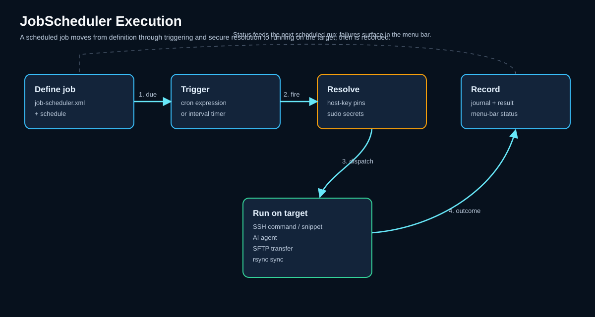

JobScheduler¶
Der JobScheduler führt unbeaufsichtigte Hintergrundjobs aus, während KorTTY geöffnet ist. Es ist kein Betriebssystemdienst oder eine aktive SSH-Terminalregisterkarte erforderlich. Jobs werden automatisch nach einem konfigurierten Zeitplan mithilfe gespeicherter SSH-Verbindungen aus dem Verbindungsmanager ausgeführt.
Unter macOS und Windows verhindert ein aktivierter Job mit einer zukünftigen Ausführung, dass der Computer in den Systemschlaf wechselt, während korTTY ausgeführt wird, wenn Konfiguration > Systemschlaf verhindern aktiviert ist, sodass die geplante Zeit erreichbar bleibt. Der Scheduler verwendet einen einzigen Weckvorgang für den nächsten fälligen Lauf und verfügt über keinen Abfrage-Timer, wenn kein aktivierter zukünftiger Job vorhanden ist. Ohne Terminalverbindung, zukünftiger oder laufender Scheduler-Auftrag oder aktive AI-Anfrage bleibt der Systemschlaf auch dann verfügbar, wenn die Einstellung überprüft wird. Während ein Job ausgeführt wird, fügt macOS korTTY nicht in App Nap ein. Der Display-Ruhezustand ist nicht blockiert. Die Linux-Stromunterdrückung wird noch nicht unterstützt.
Öffnen Sie es mit Tools > JobScheduler.... Der Dialog merkt sich seine Fensterposition und -größe. Die deutsche Benutzeroberfläche übersetzt jetzt alle Beschriftungen, Aktionsnamen, Statuswerte, Validierungsmeldungen, Zielselektoren und unterstützenden Eingabeaufforderungen. Technische Protokoll- und Formatnamen wie SFTP, Rsync, ZIP, TAR, stdout und stderr bleiben unverändert.

Übersicht¶
JobScheduler unterstützt sechs Arten von Aktionen:
- COMMAND – Führen Sie einen nicht interaktiven Remote-Shell-Befehl aus
- SNIPPET_SCRIPT – Führen Sie ein SnippetManager-Skript auf dem Ziel mit optionalen Parametern aus
- AI_AGENT – Führen Sie einen Headless-KI-Agenten mit expliziter automatischer Genehmigung aus
- AI_SWARM – Senden Sie eine KI-Agent-Aufgabe parallel an alle ausgewählten Ziele und speichern Sie die kombinierte Antwort als gespeicherten Schwarm-Chat
- SFTP – Hochladen, Herunterladen, Synchronisieren, Löschen, Umbenennen, Verzeichnisse erstellen, Berechtigungen festlegen, Eigentümer ändern, Remote-Kopieren oder Archive erstellen
- RSYNC_SYNC – Verzeichnisse über externes
rsyncüber SSH synchronisieren
Job-Konfiguration¶
Das JobScheduler-Dialogfeld verfügt über drei Registerkarten: Job, Aktion und Journal.
Job-Registerkarte: Ziele und Zeitpläne¶
Verwenden Sie die Registerkarte Job, um zu definieren, wo und wann ein Job ausgeführt wird.
| Feld | Beschreibung |
|---|---|
| Aktiviert | Aktiviert oder deaktiviert den Job. |
| Name | Anzeigename, der in der Auftragsliste, im Journal und im Menüleistenstatus angezeigt wird. |
| Verbindung | Öffnet den Verbindungsmanager-Auswahldialog. Wählen Sie einzelne SSH-TCP-Server, ganze Gruppen oder beides aus. Mosh-Verbindungen werden nicht unterstützt. |
| Arbeitsverzeichnis | Optionales Remote-Verzeichnis. Verwenden Sie Durchsuchen..., um eine Verbindung zum Ziel herzustellen und ein Verzeichnis auszuwählen, wenn der Pfad nicht bekannt ist. |
| Journal | LIMITED_REDACTED speichert begrenzte, geschwärzte Auszüge. FULL speichert die vollständige Ausgabe/Transkripte (von KorTTY verwaltete Geheimnisse werden weiterhin geschwärzt). |
| Aktiv von / Aktiv bis | Optionaler Datumsbereich für den Job. Außerhalb dieses Bereichs wird der Job nicht ausgeführt. |
| Fensteranfang / Fensterende | Zeitfenster für den Job (z. B. 09:00 bis 17:00 Uhr). Die Werte werden aus validierten Zeitlisten ausgewählt. |
| Intervallminuten | Optionales wiederholtes Intervall innerhalb des aktiven Fensters. Wenn festgelegt, wird der Job alle N Minuten zwischen Fensterstart und -ende ausgeführt. |
| Feste Zeiten | Optionale explizite Startzeiten (z. B. 09:30, 12:00, 15:30). Die Werte werden aus validierten Zeitlisten ausgewählt. |
| Wochentage | Optionaler Wochentagsfilter. Mit der „Alle“-Taste können Sie alle Wochentage auf einmal auswählen oder löschen. |
Zeitplanberechnungen verwenden die Zeitzone des lokalen Systems. Wenn keine feste Zeit und kein Intervall konfiguriert sind, ist der nächste Lauf der Fensterstart an einem erlaubten Datum.
Note
Scheduler-Jobs unterstützen nur gespeicherte SSH-TCP-Verbindungen. Mosh-Ziele werden als nicht unterstützt blockiert und der Grund wird in das Journal geschrieben.
Host-Schlüssel, Sudo und Geheimnisse¶
Die Überprüfung des Hostschlüssels ist standardmäßig sicher. Wählen Sie vor der unbeaufsichtigten SSH/SFTP/Rsync-Ausführung das Ziel aus und klicken Sie auf Hostschlüssel bestätigen, damit KorTTY den angehefteten Fingerabdruck und das öffentliche OpenSSH-Schlüsselmaterial speichert.
Das Kontrollkästchen Hostschlüsselüberprüfung für diesen Job deaktivieren deaktiviert die Hostschlüsselüberprüfung nur für den ausgewählten Job. Dies ist unsicher und sollte nur verwendet werden, wenn das Risiko bekannt ist.
Sudo-Passwörter können für einen Server oder für eine Servergruppe gespeichert werden:
- Serverspezifische Sudo-Passwörter werden zuerst verwendet.
- Gruppen-Sudo-Passwörter werden als Fallback verwendet.
- Gespeicherte Sudo-Passwörter werden mit dem Master-Passwort verschlüsselt.
- Wenn das Hauptkennwort gesperrt ist und ein Job SSH-, Sudo-, API- oder Archivgeheimnisse benötigt, wird der Job blockiert und protokolliert.
Bei Rsync-Jobs bedeutet Sudo verwenden passwortloses Remote-Sudo nur über sudo -n rsync. Gespeicherte Sudo-Passwörter werden von der aktuellen Rsync-Integration nicht verwendet.
Aktionsregisterkarte: Jobtypen und Konfiguration¶
Verwenden Sie die Registerkarte Aktion, um auszuwählen, was der Job tun soll. Auf der Registerkarte werden nur die Felder angezeigt, die die ausgewählte Aktion verwenden kann. Nicht verwandte Felder werden daher ausgeblendet. Der Aktionsselektor umfasst:
| Aktion | Zweck |
|---|---|
| BEFEHL | Führen Sie einen nicht interaktiven Remote-Befehl aus. |
| SNIPPET_SCRIPT | Führen Sie ein SnippetManager-Skript auf dem ausgewählten Ziel aus. Das Feld Snippet-Suche filtert das Skript-Dropdown nach Snippet-Name, Kategorie, Sprache oder ID; Snippet-Parameter übergibt zusätzliche Argumente als einen argv-Wert pro Zeile. |
| AI_AGENT | Führen Sie den Headless-Scheduler-KI-Agenten aus. Die unbeaufsichtigte Befehlsausführung erfordert die automatische Genehmigung von KI-Befehlen während des Auftrags. |
| AI_SWARM | Führen Sie das aus KI-Schwarm kopflos auf jedes ausgewählte Ziel parallel und fassen die Antworten in einer Vergleichstabelle zusammen. |
| SFTP_UPLOAD | Laden Sie einen lokalen Pfad auf einen Remote-Pfad hoch. |
| SFTP_DOWNLOAD | Laden Sie einen Remote-Pfad auf einen lokalen Pfad herunter. |
| SFTP_SYNC | Lokale und Remote-Pfade in der ausgewählten Upload-/Download-Richtung synchronisieren. |
| SFTP_DELETE | Einen Remote-Pfad löschen. |
| SFTP_RENAME | Benennen Sie einen Remote-Pfad um. |
| SFTP_MKDIR | Erstellen Sie ein Remote-Verzeichnis. |
| SFTP_CHMOD | Berechtigungen ändern. Es werden numerische Modi wie 755 und symbolische Modi wie u+rw,o-w akzeptiert. |
| SFTP_CHOWN | Besitzer und/oder Gruppe ändern. Besitzer- und Gruppenschaltflächen können das Ziel abfragen und verfügbare Werte anzeigen. |
| SFTP_COPY_REMOTE | Kopieren Sie einen Remote-Pfad in einen anderen Remote-Pfad auf demselben Ziel. |
| SFTP_ARCHIVE | Erstellen Sie ein Remote-Archiv. |
| RSYNC_SYNC | Synchronisieren Sie ein oder mehrere Verzeichnisse über externes rsync über SSH. |
Pfadfelder bieten eine lokale Finder-/Explorer-Auswahl, wenn der Pfad lokal ist, und das Durchsuchen von Remote-Verzeichnissen, wenn der Pfad remote ist. Remote-Browsing erfordert eine ausgewählte Ziel- und Hostschlüsselüberprüfung, es sei denn, der Job deaktiviert die Hostschlüsselüberprüfung ausdrücklich.
Snippet-Skriptjobs¶
Snippet-Skriptjobs verwenden den ausgewählten SnippetManager-Eintrag, ohne dass eine geöffnete Terminalregisterkarte erforderlich ist. KorTTY löst integrierte Snippet-Variablen und gespeicherte SnippetManager-Variablen vor der Ausführung auf. Fehlende Snippets, fehlende gespeicherte Variablenwerte und nicht unterstützte Snippet-Sprachen blockieren den Job und schreiben den Grund in das Journal. Zusätzliche Snippet-Parameter werden einzeln pro Zeile eingegeben, sodass Werte mit Leerzeichen als einzelne Skriptargumente übergeben werden.
AI Schwarmjobs¶
AI Swarm-Jobs führen über Hintergrund-SSH-Sitzungen eine AI-Agent-Eingabeaufforderung auf allen ausgewählten Zielen parallel aus – es werden keine Terminal-Registerkarten geöffnet. Über die gemeinsamen Felder KI-Profil, KI-Eingabeaufforderung und Automatisch genehmigende KI-Befehle hinaus gelten zwei schwarmspezifische Felder:
| Feld | Beschreibung |
|---|---|
| Schwarmparallelität | Wie viele Ziele gleichzeitig ausgeführt werden (1–16, Standard 4). |
| Schwarm schreibgeschützt | Beschränkt jeden Agenten auf nicht mutierende Befehle. Standardmäßig aktiviert. |
Die Ergebnisse werden zweimal gespeichert: Das Journal zeichnet das Laufergebnis auf, und die vollständige Konversation – einschließlich der kombinierten Vergleichstabelle pro Server – wird als Schwarm-Chat gespeichert, der über den Abschnitt Schwarm-Chats des KI-Managers erneut geöffnet werden kann.
Der schnellste Weg, einen AI Swarm-Job zu erstellen, ist die Schaltfläche Planen… auf der Registerkarte AI Swarm: Sie füllt einen neuen Job mit den aktuellen Zielen, der Eingabeaufforderung, dem AI-Profil und der schreibgeschützten Einstellung der Registerkarte vorab aus. Auf dieser Seite finden Sie empfohlene Schwarm-/Scheduler-Nutzungsszenarien.
Warning
Ein geplanter Schwarm, bei dem Schwarm schreibgeschützt deaktiviert und Automatisch genehmigende KI-Befehle aktiviert ist, verändert Systeme unbeaufsichtigt. Testen Sie die Eingabeaufforderung interaktiv auf der Registerkarte „AI Swarm“, bevor Sie einen solchen Job aktivieren.
SFTP-Archivierungsjobs¶
SFTP-Archivierungsjobs unterstützen ZIP, passwortgeschütztes ZIP, TAR und TAR.BZ2. Archivquellen und Ausschlussmuster akzeptieren einen Pfad oder ein Muster pro Zeile. Das Archiv kann optional nach der Erstellung heruntergeladen werden.
Wenn Sudo-Staging für SFTP-Pfade verwenden aktiviert ist, stellt KorTTY Dateien an einem temporären Speicherort bereit und verwendet Sudo-unterstützte Remote-Befehle wie mv, cp, tar, chmod und chown, wenn erhöhte Rechte erforderlich sind. Bereinigungsfehler werden in das Journal geschrieben.
Rsync-Jobs¶
RSYNC_SYNC unterstützt den Upload und Download zwischen dem lokalen Dateisystem und gespeicherten SSH-TCP-Verbindungen.
- Upload: Lokale Quellverzeichnisse werden unter dem Remote-Zielstamm synchronisiert.
- Download: Remote-Quellverzeichnisse werden unter dem lokalen Zielstamm synchronisiert.
- Mehrere Quellen werden unterstützt.
- Fehlende Dateien löschen fügt
--deletehinzu; es ist standardmäßig deaktiviert. - Bei Downloads von mehreren Gruppenzielen schreibt KorTTY jedes Ziel in sein eigenes Unterverzeichnis unterhalb des lokalen Zielstammverzeichnisses, um ein Überschreiben von Dateien von einem anderen Server zu vermeiden.
KorTTY erstellt die Rsync-Ausführung als ProcessBuilder-Argumentliste, anstatt den Befehl per Shell zu verketten. Der Befehl verwendet -a --itemize-changes; --delete wird nur hinzugefügt, wenn das Job-Kontrollkästchen aktiviert ist.
Rsync-Voraussetzungen¶
rsyncwird vonPATHübernommen, es sei denn, unter Einstellungen > SFTP > JobScheduler Rsync ist ein expliziter Binärpfad konfiguriert.sshmuss inPATHverfügbar sein.- Das Fixieren des Hostschlüssels ist erforderlich, es sei denn, der Job deaktiviert die Hostschlüsselüberprüfung ausdrücklich.
Die Authentifizierung mit - Passwörtern und Passphrasen mit privatem Schlüssel verwendet einen temporären
SSH_ASKPASS-Helfer, der nur dem Besitzer vorbehalten ist. Secrets, Hilfspfade und temporäre Secret-Dateipfade werden vor dem Journaling geschwärzt.
Journal-Tab¶
Auf der Registerkarte Journal werden Jobausführungen mit lokalen KorTTY-Zeitstempeln, Status, Jobnamen und Zusammenfassung aufgeführt. Die Spalten Gestartet, Status, Auftrag und Zusammenfassung sind sortierbar; In der Standardreihenfolge werden die neuesten gestarteten Einträge zuerst angezeigt.
Die Suchzeile kann mit allen persistenten Journalfeldern oder nur mit ausgewählten Spalten wie Status, Job, Zusammenfassung, Stdout, Stdderr und Detail übereinstimmen. Geben Sie mehrere durch Leerzeichen getrennte Begriffe ein, wenn jeder Begriff irgendwo im ausgewählten Suchbereich vorkommen muss; Verwenden Sie * innerhalb eines Begriffs als Platzhalter, zum Beispiel backup*fail.
Wenn Sie eine Zeile auswählen, werden stdout, stderr und Detailtext angezeigt. Verwenden Sie Ausgewählte löschen, um ausgewählte Journaleinträge zu entfernen. Standardmäßig löscht KorTTY automatisch Planer-Journaleinträge, die älter als 14 Tage sind; Legen Sie den Aufbewahrungswert auf 0 fest, um Einträge auf unbestimmte Zeit aufzubewahren.
Der Protokoll-/Detailbereich unterhalb der Tabelle ist durch einen vertikalen Splitter getrennt. Ändern Sie die Größe, um der Ausgabe mehr oder weniger Höhe zu verleihen. KorTTY speichert diese Teilerposition in den globalen Einstellungen. Markieren Sie im Detailtextbereich den Text und klicken Sie mit der rechten Maustaste, um den ausgewählten Text in die Zwischenablage zu kopieren.
Zu den Journalstatus gehören erfolgreiche, fehlgeschlagene, blockierte, abgebrochene und ausgeführte/Systemeinträge. Gründe wie gesperrtes Master-Passwort, fehlende Hostschlüssel-PIN, fehlender rsync/ssh, nicht unterstütztes Mosh-Ziel oder Shutdown-Drain werden als Journaldetails geschrieben.
Menüleistenstatus und Stornierung¶
Wenn Jobstatus in Menüleiste anzeigen aktiviert ist, zeigt KorTTY den Scheduler-Status nach Hilfe nur an, wenn ein aktivierter Scheduler-Eintrag vorhanden ist oder ein Job gerade ausgeführt wird. Der Status zeigt den laufenden Auftrag, den Abbruchstatus oder den nächsten Auftrag mit einem Live-Countdown an.
Klicken Sie auf das Statusmenü, um Folgendes anzuzeigen:
- JobScheduler öffnen...
- Jobs ausführen und Einträge abbrechen
- bis zu fünf nächste Aufträge in der Warteschlange mit Startzeit und Live-Countdown
Klicken Sie mit der rechten Maustaste auf die Statusbezeichnung, um ein kompaktes Menü mit Abbruchaktionen für laufende Jobs und einer Verknüpfung zum Öffnen von JobScheduler anzuzeigen. Stornierungsanfragen werden protokolliert und die Ausführung von SSH/Rsync-Arbeiten wird nach Möglichkeit sauber unterbrochen.
KorTTY wird während der Ausführung von Jobs beendet¶
Wenn KorTTY kurz vor dem Beenden steht, während JobScheduler-Jobs ausgeführt werden, wird eine Warnung mit den aktiven Jobnamen angezeigt. Wenn Sie Abbrechen wählen, läuft KorTTY weiter. Wenn Sie Warten und beenden auswählen, wird der Shutdown-Drain-Modus gestartet:
- neue geplante oder manuelle Jobstarts sind blockiert;
- Die Wartezeit beim Herunterfahren wird in das Journal geschrieben.
- KorTTY wartet darauf, dass laufende Jobs abgeschlossen oder abgebrochen werden;
- KorTTY wird automatisch beendet, nachdem der Entleerungsvorgang abgeschlossen ist.
Sicherheit und Geheimnisse¶
- Host-Schlüssel sind standardmäßig fixiert, um Man-in-the-Middle-Angriffe auf die unbeaufsichtigte Ausführung zu verhindern.
- Sudo-Passwörter werden verschlüsselt mit dem Master-Passwort gespeichert.
- SSH-Schlüsselpassphrasen und Archivpasswörter werden verschlüsselt gespeichert.
- KorTTY geschwärzt verwaltete Geheimnisse (Passwörter, Passphrasen, Archivanmeldeinformationen) aus der Journalausgabe vor der Persistenz.
- Wenn das Hauptkennwort gesperrt ist, wenn ein Job SSH-, Sudo-, API- oder Archivgeheimnisse benötigt, wird der Job blockiert.
Fehlerbehebung¶
Warning
JobScheduler-Job ist blockiert: Öffnen Sie Extras > JobScheduler... > Journal und überprüfen Sie den Detailtext des ausgewählten Eintrags. Häufige Ursachen sind:
- Master-Passwort gesperrt
- Fehlende Hostschlüssel-PIN
- Nicht unterstütztes Mosh-Ziel
- Fehlendes rsync oder ssh im PATH
- Alte Hostschlüssel-PIN ohne OpenSSH-Public-Key-Material für Rsync
JobScheduler Rsync kann nicht gestartet werden: Überprüfen Sie die lokalen Werte rsync --version und ssh -V oder konfigurieren Sie den Rsync-Binärpfad unter Einstellungen > SFTP > JobScheduler Rsync.
JobScheduler-Remotebrowser kann nicht geöffnet werden: Wählen Sie genau ein Ziel aus und bestätigen Sie zuerst den Hostschlüssel, es sei denn, der Job deaktiviert die Hostschlüsselüberprüfung ausdrücklich.